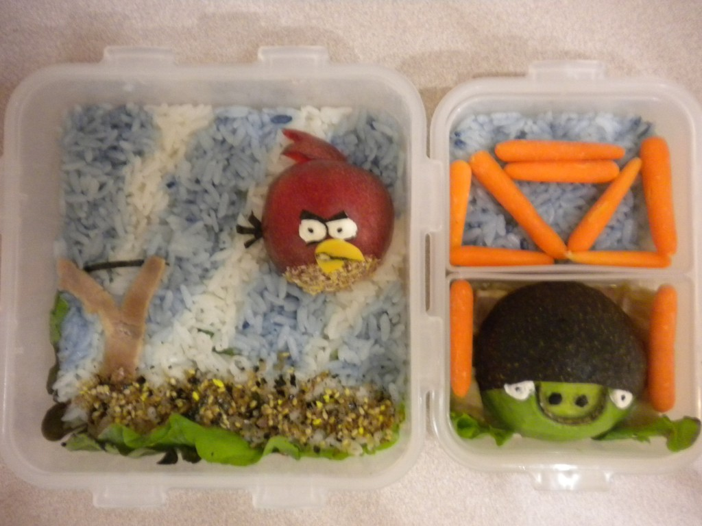

- Angry Birds
- Ingredients:
- Rice
- Baby Carrots
- Avocado
- Red Plumb
- All Natural Food Coloring
- Rice Seasoning
- Ham
- Dried Sea Weed
- Green Leaf Lettuce
- American Cheese
- Black Food Marker
- Peanut powder
- Cream Cheese
- Peppercorn
- Black Sesame Seeds
- Directions:
-
- Mix 1/2 cup cooked white rice with blue food coloring. Place in bento box in leaving space for white rice. Fill in space with white rice.
- Sprinkle rice seasoning on the bottom of the rice.
- Cut a piece of ham into the shape of a Y, then place in bento box on the left side as shown in picture.
- Cut a small strip of seaweed for the "rope," bird's eyebrows, and tail.
- Cut the red plumb in half, cut a small piece from the second half for the head feathers, peel the skin from the bottom 1/4 of plumb and dip in peanut powder. Arrange all parts in the bento box.
- Cut an avocado in half, peel 1/4 of the skin off, then place in bento box.
- Use a small strip cut from the avocado skin to shape the U of the pig's nose. Use the peppercorns for the nostrils.
- Using a small amount of cream cheese, form the eyes for both the bird and the pig. Use the black sesame seeds for the pupils.
- Cut a beak for the bird out of cheese, outline with the black food marker.
- Arrange the carrot sticks however you want around the pig ^.^
